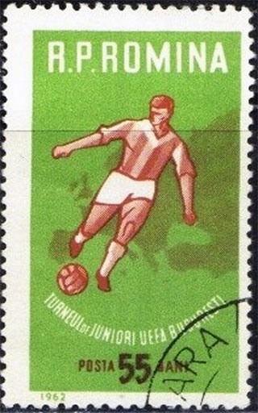
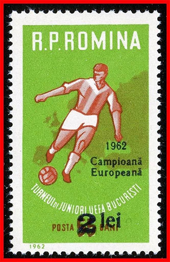
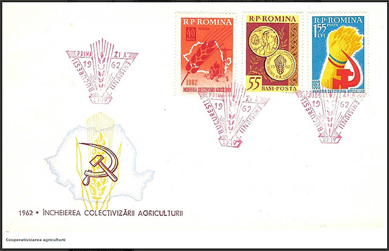
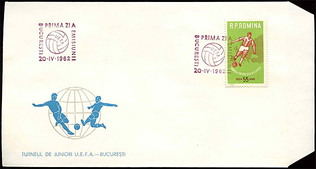
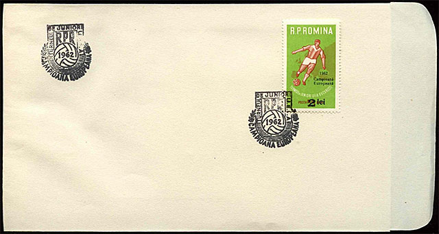
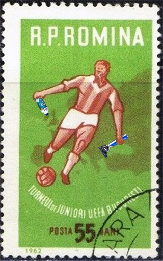

Fotbal, o generaţie de trişori
Victor Manta, PWO
Între 20 - 29 aprilie 1962 a avut loc în România finala Campionatului U.E.F.A. de juniori, jucători cu vârsta sub 19 ani.
Pe 20 aprilie 1962 a fost emis, exact la începutul turneului, o marcă comemorativă dedicată turneului (Scott nr. 1474). Ea este inscripţionată „TURNEUL DE JUNIORI UEFA BUCURESTI” şi ne arată un tânăr fotbalist şutând într-o minge, pe un fond verde (ce aminteşte culoarea unui teren de fotbal) pe care apare cenuşie harta Europei.

Pe 29 aprilie 1962, într-un stadion „23 August” arhiplin, echipa României a cucerit titlul de campioană U.E.F.A. de juniori, învingând în finală cu 4 - 1 echipa de juniori a Iugoslaviei. A fost un succes de răsunet, care i-a umplut de bucurie şi mândrie pe tinerii din România, printre care mă număram la acea vreme şi eu, autorul acestor rânduri.
Marca de mai sus a fost supratiparită şi a apărut, fără grabă, pe 31 iulie 1962, adică la peste trei luni trecute de la ziua victoriei. Mai jos vă arăt această marca, (Scott Nr. 1510), supratiparită cu urâte caractere "dactilografiate". Profitând de un interes scontat, valoarea ei facială a fost aproape cuadruplată de către poştă...

Jucătorii şi conducătorii echipei au dedicat victoria lor, aşa cum li s-a cerut, „Încheierii colectivizării agriculturii”, o acţiune începută de partidul comunist şi de guvernul român în 1949. Prin aceasta acţiune, executată deseori cu brutalitate, au fost înfiinţate în aproape toată România aşa numitele gospodarii agricole colective, insprate dupa modelul colhozurilor din URSS. Odată cu colhozurie româneşti au început şi inevitabilele lipsuri. Informaţii suplimentare (în engleză).
Mai jos vă prezint plicul prima zi (FDC) dedicat de Posta Româna acestui (tragic) eveniment. Plicul a fost emis pe 27 aprilie, cu două zile înainte de încheierea turneului de fotbal. Simbolul comunist al "secerei şi ciocanului" acoperă ca o pecete de neşters imaginea hărţii României.

Anii au trecut, dar evenimentul fotbalistic a rămas, timp de peste 50 de ani, ca o amintire placută, întipărită ca atare în memoria mea de filatelist şi de amator al sportului. Am fost adus brusc la realitate de un amic de-al meu din tinereţe, cu care jucam pe vremuri mici miuţe pe străzile, pe atunci lipsite de maşini, ale cartierului în care locuiam. Acesta mi-a relatat într-un e-mail că lucrurile de atunci nu au fost tocmai curate. În consecinţă am consultat Internetul şi am aflat că în realitate ele au fost destul de murdare, drept care rămăşiţele de entusiasm ale vremii s-au evaporat cu repeziciune.

Iată care au fost vârstele reale ale unor jucatori din echipa campioană: Vasile Suciu (19 ani si 6 luni), Sandor Pall (20 de ani si 5 luni), Mircea Petescu (căpitan, 19 ani si 11 luni), Mircea Racelescu (22 de ani), C-tin Jamaischi (17 ani şi 2 luni), D. Popescu (20 de ani şi o luna), C. Matei (21 de ani şi 10 luni), Emil Dumitriu II (19 ani şi 5 luni), Fl. Voinea (20 de ani şi 10 luni), László Gergely (20 de ani şi 6 luni), Ion Hajdu (20 de ani şi 3 luni). Amintesc ca era vorba despre o echipă de juniori, selecţionaţi ca având o vârstă de "sub 19 ani". Pentru a putea participa la turneu, statul român a emis pentru jucători noi acte de identitate, completate în mod intenţionat cu date de naştere incorecte, vârsta jucătorilor fiind ajustată în ele la "cerinţele" momentului.

Din echipa câstigatoare a fost creată, dupa turneul reuşit, o echipa de divizie A numită Viitorul. Scopul declarat al acestei inovaţii a fost sa se asigure pentru noua echipă conditii de vârf pentru ca jucătorii sa evolueze spre performanţe şi mai înalte. Experimentul nu a durat decât o foarte scurtă vreme, jucătorii fiind apoi împarţăiti între echipele dominante, Steaua si Dinamo din Bucureşti (pe care, de altfel, Viitorul a apucat să le învingă în acel campionat al diviziei A). Nu este exclus ca izolarea temporară a acestor jucători în cadrul unei noi echipe să fi avut o directă legătură cu ascunderea vârstei acestora.
Ar fi de observat în final că aceasta generatie, din care au făcut parte jucatori care s-au remarcat pe plan national, nu a reuşit, aşa cum ar fi fost de aşteptat, să se afirme prin rezultate deosebite pe plan international, în cadrul echipei naţionale de seniori.
M-a intrigat observaţia unui comentator că, în perioada turneului, unii juniori români se rădeau de câte două ori pe zi. Această observaţie, combinată cu expresia de argou "a pune (sau a trage) bărbi", m-au inspirat să creez imaginea ironică situată în dreapta jos:

Am observat că pe imagine jucătorul nu priveşte mingea în care tocmai şutează. Oare o face de ruşine?
| Published:
23.09.2015. Revised:
23.09.2015
. Copyright © 2015 by Victor Manta, Switzerland. All rights reserved worldwide. |
|